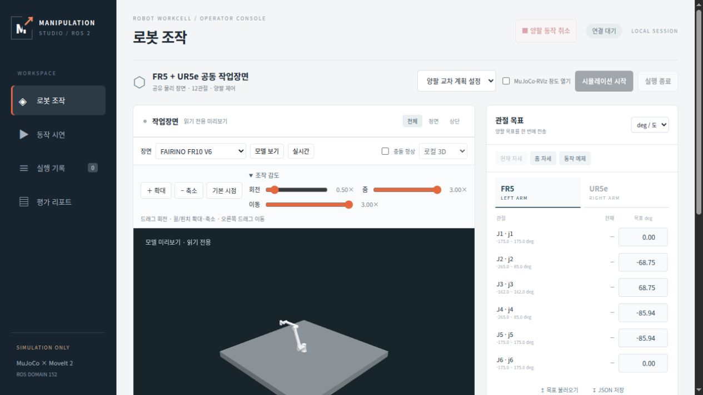

상태 갱신과 화면 렌더링의 분리
기존 서버 JPEG 방식에 로컬 WebGL 표시를 추가했습니다. 브라우저는 준비된 형상과 관절 자세를 받아 장면을 그리고, 수신 주기와 별개로 카메라를 조작합니다. 물리 계산과 로봇 명령은 기존 실행 계층이 담당합니다.
이번 비교의 결론: 정지 장면에서 WebGL은 약 60 fps로 렌더링했지만 수신 자세 적용은 약 4회/s였습니다. HTTP 응답 본문량과 서버 합산 RSS는 낮았고, 평가 서버 프로세스 CPU 합계는 비슷한 수준이었습니다.
이 페이지는 2026-10-22 뷰어 개발 방향성의 후속 기록입니다. 당시 JPEG 구성과 미측정 항목은 과거 기록으로 보존합니다.
이미지 수신에서 로컬 장면 표시로
도식 1. 두 표시 경로
WebGL은 같은 자세를 여러 화면 프레임에 재사용합니다. 자세 적용률은 새 sequence의 수신 데이터를 적용한 횟수이며, 이 정지 실험에서 로봇 자세가 바뀌었다는 뜻은 아닙니다. 화면 렌더링 속도의 증가가 물리·제어 주기나 모션 계획 속도의 증가를 뜻하지는 않습니다. JPEG는 대체 표시 방식으로 유지합니다.
정지 장면의 표시·전송·서버 부하
같은 홈 자세에서 방식별 15초 구간 3개, 총 45초를 관측했습니다. 전환·초기화 구간을 제외하고 준비된 상태에서 측정했습니다. 브라우저는 1280 × 720, DPR 1이며 JPEG 원본은 960 × 640, WebGL 캔버스는 621 × 414입니다. 동일 해상도 비교는 아닙니다.
| 지표 | 서버 JPEG | 로컬 WebGL | 의미·해석 범위 |
|---|---|---|---|
| 브라우저 렌더링 | 페인트 FPS 미측정 | 59.95 fps | 동일 자세의 반복 렌더를 포함합니다. |
| 수신 자세 적용 | 별도 집계 없음 | 4.00회/s | 새 sequence의 데이터 적용 횟수입니다. |
| JPEG 성공 응답 | 3.9778회/s | 해당 없음 | HTTP 200 응답률이며 화면 페인트율이 아닙니다. |
| HTTP 응답 본문 | 123.0 kB/s | 67.5 kB/s | 이 측정창에서 45.1% 낮았습니다. |
| 평가 서버 프로세스 CPU 합계 | 58.64% | 59.28% | 시간 가중 평균이며 코어 하나가 100%입니다. |
| 서버 합산 RSS | 1142.18 MiB | 1030.36 MiB | 표본 평균이며 공유 페이지가 중복 계산될 수 있습니다. |
| 관측 RTF | 약 1.0000 | 약 1.0000 | 시뮬레이션 시각 증가량 ÷ 관측 경과 시간입니다. |
HTTP 값은 실제 브라우저 GET의 응답 본문만 집계했습니다. 헤더·전송 계층 비용·계측 probe는 제외했으며, WebGL 초기 형상 자산 약 3.42 MB도 정상 표시 구간에 포함되지 않습니다. kB·MB는 1000 기준입니다.
CPU·RSS는 콘솔과 자손 프로세스의 합계로 브라우저 CPU·GPU를 제외합니다. CPU는 경계를 넘는 구간을 제외한 약 14.5초/창을 사용했습니다. 자세한 표본·분류·수치는 표시 성능 측정 리포트에서 확인합니다.
확대·축소·감도 조절
조작 화면과 시연 화면에 확대·축소·기본 시점 버튼을 추가했습니다. 기존 휠·핀치 줌과 함께 사용할 수 있습니다. 조작 감도를 펼치면 회전·줌·이동을 각각 0.25~3배로 조절합니다.
- 버튼 줌은 현재 바라보는 방향과 중심을 유지하며, 기존 카메라 거리 제한을 따릅니다. 기본 시점은 현재 모델을 다시 맞춥니다.
- 감도는 조작·시연 화면에 함께 적용하고 같은 페이지의 모델·장면 전환에서 유지합니다. 새로고침하면 기본 1배로 돌아갑니다.
- 서버 이미지 방식에서는 확대·감도를 비활성화합니다. 이 버튼은 브라우저 카메라를 조절하며 로봇 명령을 보내지 않습니다.

읽기 전용 모델에서 확대·축소·복귀, 키보드 감도 조절, 시연 화면 동기화, FR10 모델 전환 후 설정 유지와 이미지 모드 비활성화를 브라우저에서 확인했습니다. 거리 제한과 오류·미준비 차단은 단위 검사로 확인했습니다. 실제 터치 장치와 조작 입력 지연은 별도로 측정하지 않았습니다.
이번 결과로 판단하지 않은 범위
- 브라우저·GPU 부하, GPU 렌더 시간·메모리와 카메라 입력부터 표시까지의 지연은 측정하지 않았습니다.
- 로봇 이동·계획 실행 중 부하, 원격 네트워크, 긴 시간의 안정성은 비교하지 않았습니다.
- 정지 자세·서로 다른 해상도의 짧은 비교입니다. 모든 장면에서 전송량 감소나 자원 절감을 보장하지 않습니다.
근거와 확인 범위
확인일: 2026-10-26 · 측정 대상 코드: 1a44f19
- 2026-10-26 표시 성능 측정 리포트3개 연속 측정 구간과 조건, 렌더·자세·HTTP·서버 자원 지표와 해석 한계
- PR #34 · PR #35측정 이전 로컬 3D·읽기 전용 모델/장면 미리보기의 구현 기록
- 2026-10-22 뷰어 개발 방향성기존 JPEG 구성, 당시 대안 검토와 후속 평가 계획